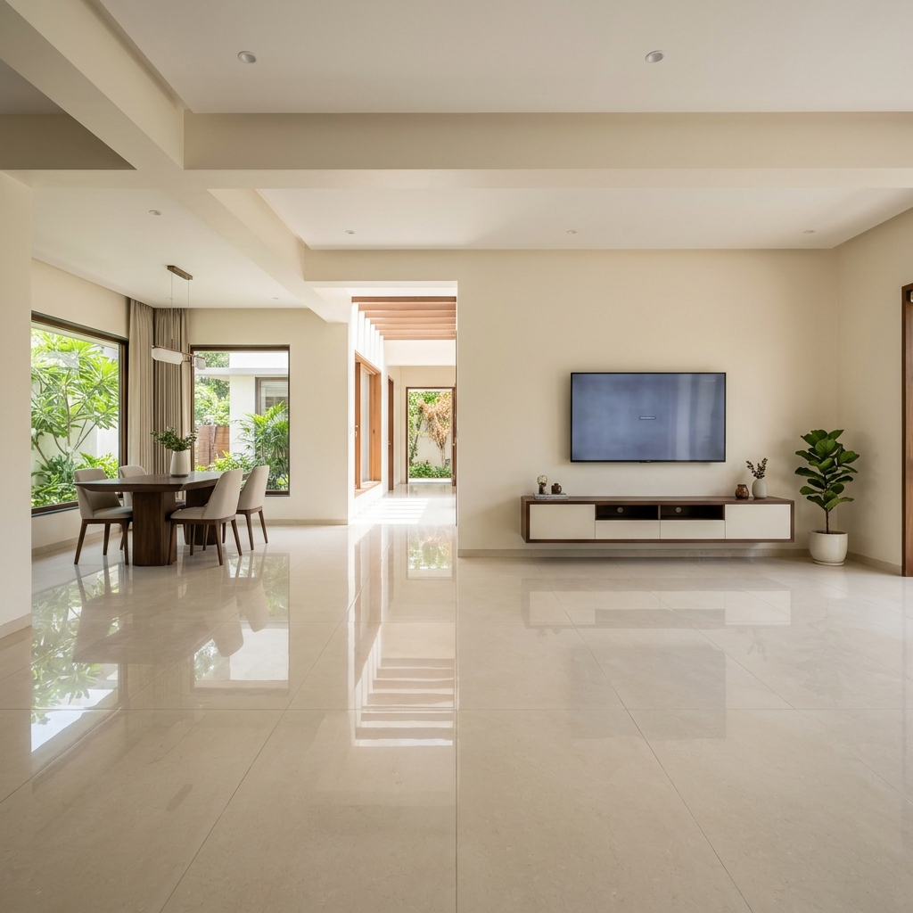
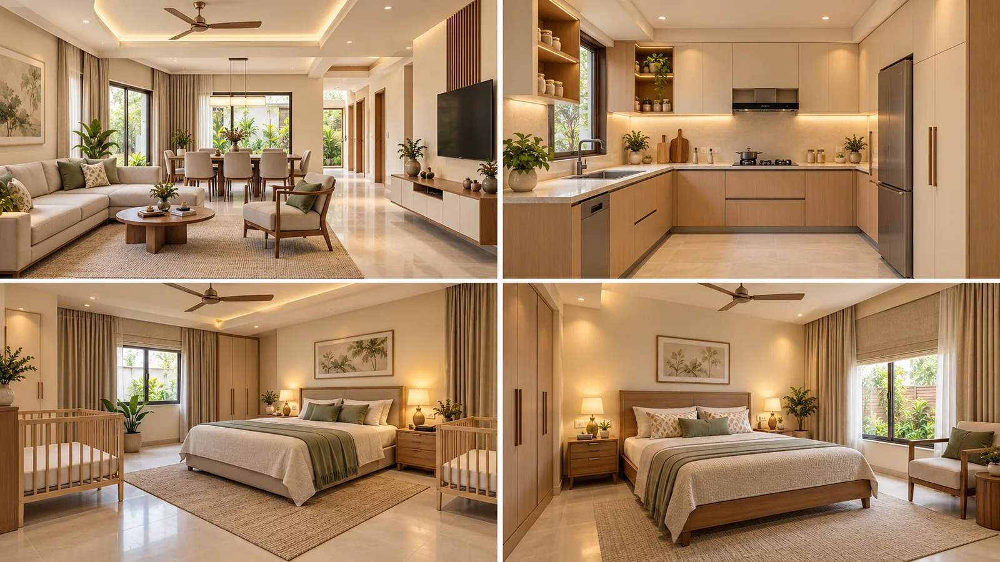
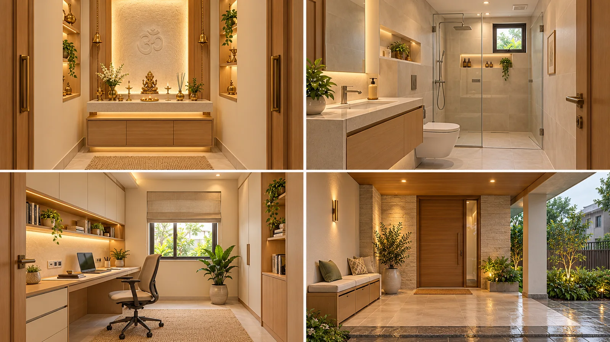

Calm sightlines
Use full-height closed storage on limited walls and keep the centre of each room clear. Open display stays small, so daily family items do not become visual clutter.
JAMMU · FOUR ADULTS + TWO CHILDREN
Your house, reimagined in warm ivory, pale oak and soft stone. A modern, minimal interior that considers the seasons—and the way your family lives.

01 / EXPLORE YOUR HOME
Rotate the house, look from above, or choose a room. Furniture and finishes are included in the model.
Image-traced design concept, not measured construction drawings. Ceiling height is undecided; shown at an assumed 3.0 m. Discuss about 10 feet clear height with your architect. The supplied dimensions and clearances must be reconciled by your architect before building.
02 / THE INTERIOR, ROOM BY ROOM
Furniture, finishes, lighting and service provisions for every space. Select a card to explore it in the model.
03 / ROOM CONCEPTS
These visual boards show the intended mood, materials and practical details. They are generated design studies, not measured renders of your exact rooms.

A quiet base palette, closed storage and warm layered light keep the shared rooms calm. Two separate cot zones are shown only as planning placeholders.

Small rooms use the same materials with easier cleaning, focused task light, moisture control and a rain-ready arrival.
Use full-height closed storage on limited walls and keep the centre of each room clear. Open display stays small, so daily family items do not become visual clutter.
Keep two separate cot zones away from curtains, cords, windows and direct AC air. Anchor tall furniture and avoid sharp coffee-table corners in the main family route.
Provide an easy sitting-height bed, reachable two-way light controls, low-glare night lighting and a clear route to the bedroom door. Confirm final heights with your parents.
Pair the light palette with external shade, roof insulation, washable finishes, sealed joinery edges, bathroom extraction and porch drainage. Colour alone cannot control heat or dampness.
Visual direction generated for this project on 11 October 2026. Furniture sizes, ceiling details, windows and room proportions must be redrawn after a measured architectural plan is approved.
04 / DESIGNED FOR JAMMU
A yearly climate profile guides shading, ventilation and materials. The palette keeps the interior light; the building envelope does the thermal work.
A simple solar-geometry estimate at Jammu’s latitude places summer sunset near 298°—close to your NW rear at 301°. Winter sunrise is near 118°—close to your SE front at 121°. Use adjustable rear shade and retain controllable winter daylight at the front. These estimates assume a flat, open horizon. You reported a neighbour on the right/SW side; it has one floor, with a reported gap of at least 3 feet. Actual height and roof profile are not measured, so its shade cannot be quantified. You confirmed the front, rear and left are open. This supports planning controllable ventilation between those sides, subject to measured window and door geometry.
Digital colours are direction only. Try large physical samples in morning and evening light before ordering.
Warm ivory with a low-sheen washable finish. Inspect and fix dampness before painting. Paint colour has little effect on indoor heat compared with shade and insulation.
Exterior-grade plywood and sealed cut edges in wet areas. Keep kitchen bases off damp floors. Ask suppliers for the actual panel grade and warranty.
Matte porcelain in living areas; tested slip-resistant finishes in bathroom and porch. Select the exact product after sample testing, not from its colour alone.
Give the SW wall and NW rear openings special shade attention. Coordinate roof insulation, external shading and screened ventilation while the shell is being designed.
05 / A CLEAR COST PLAN
No budget has been fixed. You confirmed everything will be bought new. These broad planning allowances include furniture, lights, kitchen, paint and appliances, with no reuse credit. They are not local contractor quotations.
Including 15% contingency
Adjusts allowances, not actual supplier prices
| Included category | Planning range | What sets the cost |
|---|---|---|
| 15% contingency | Design changes and unforeseen fit-out costs |
Land, foundations/plinth, structure, masonry, roof, exterior windows and doors, exterior finishes, site works, design fees and statutory approvals are outside this interior allowance. Only the plinth is built, so you also need a measured civil-building BOQ. No civil cost is invented here. Two bedroom AC units are confirmed. Equipment type is pending; capacity needs a separate heat-load calculation for each bedroom.
06 / FROM PLINTH TO HOME
Settle the decisions that are expensive to change before masonry, concrete, plaster or procurement.
Confirm who sleeps in each of the two bedrooms. Keep the bathroom access as you requested; plan privacy, night lighting, children’s storage and any future upper-floor plan.
Another floor is planned later; you confirmed the foundation/plinth was designed for it. Coordinate the shell with the engineer’s existing structural drawings. Architect to reconcile the supplied dimensions, plinth, boundaries, setbacks, door swings, window sizes, room heights and staircase. Preserve the kitchen and puja positions you confirmed. Never change columns or structural members from this visual concept.
Specify roof insulation and waterproofing, external shade, rain drainage, mosquito screens and ventilation. Check the approximate compass bearing on site and neighbouring buildings before solar design.
Prepare electrical and lighting plans, load schedule, earthing and protective devices; coordinate plumbing, bathroom exhaust, kitchen hood, AC drainage and service access. Use qualified local professionals.
Approve paint, tile and laminate samples; obtain itemised local quotations with labour, taxes and delivery stated. Release joinery only after the shell is measured. Test waterproofing, plumbing, electrical safety and ventilation before handover.
07 / SOURCES & INSPIRATION
Climate evidence, reviewed design examples and video research are labelled separately. Inspiration does not establish your site dimensions or construction suitability.
No structural member sizes, AC capacities, circuit ratings or waterproofing system are approved by this website. Those require a coordinated site-specific design.